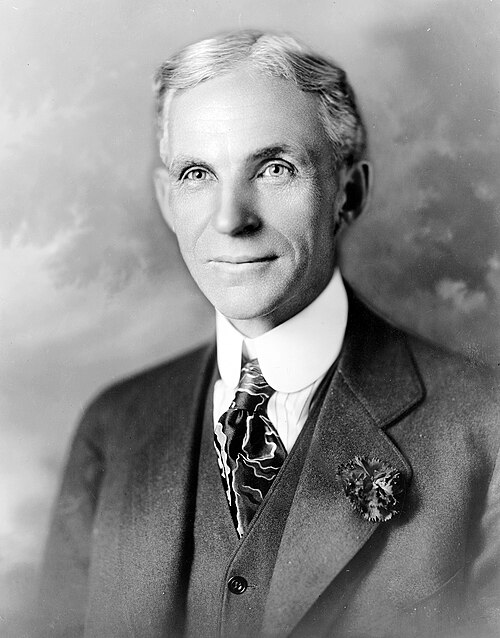
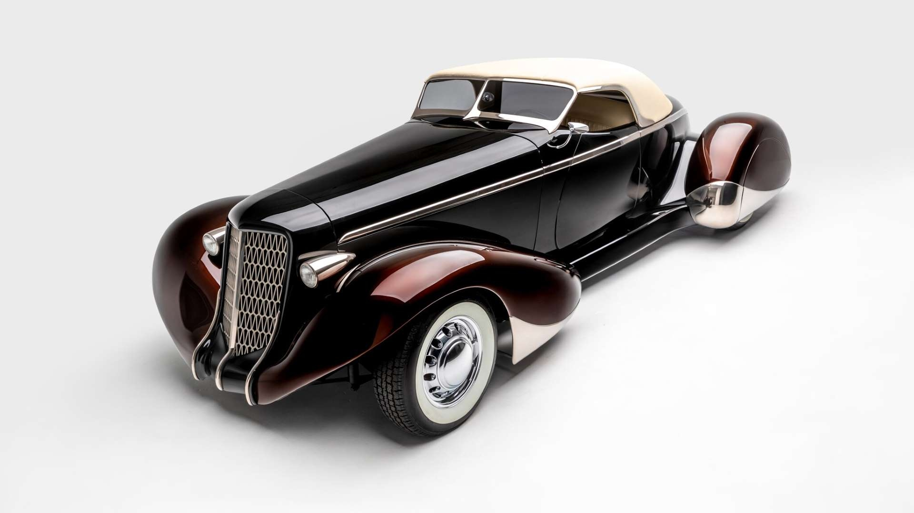
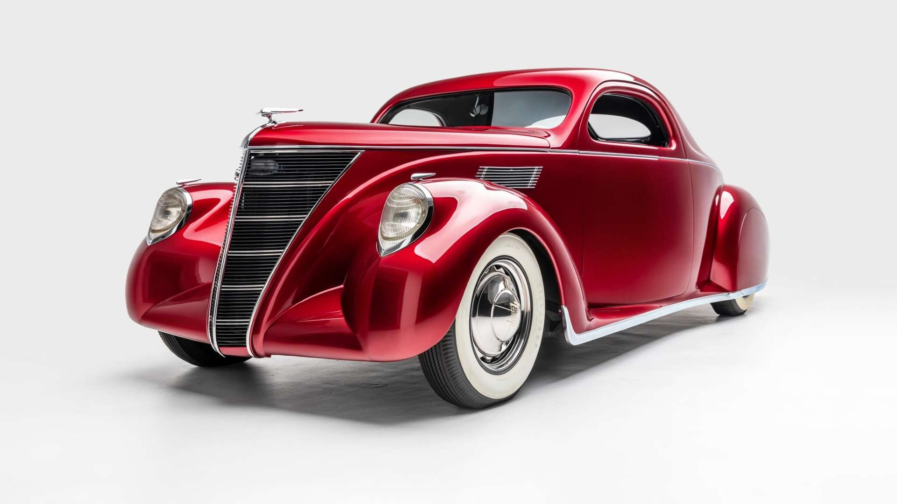
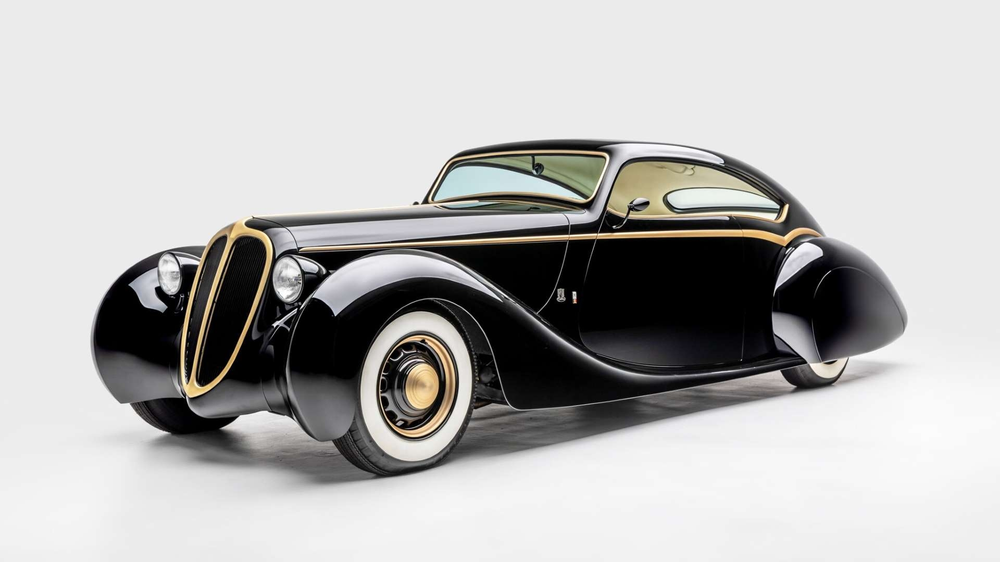
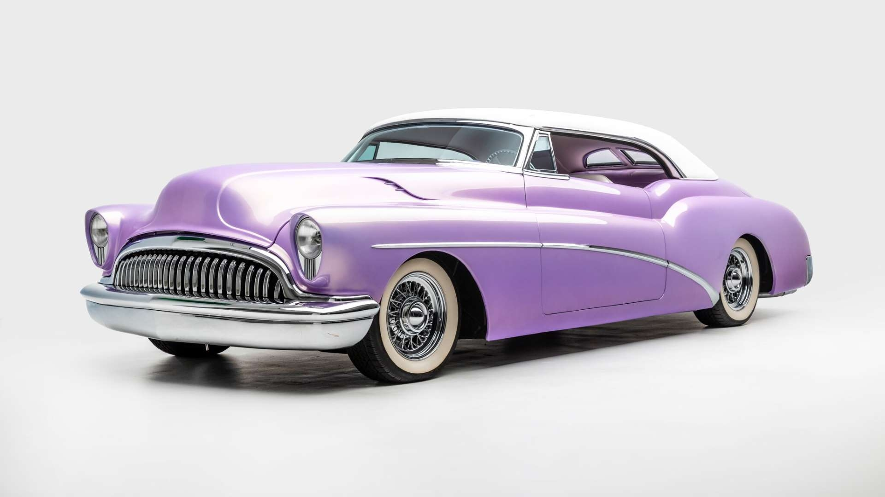

Karl Benz

1885-ben megépítette kétütemű gázmotorját, 1886-ban pedig bemutatta már egy lóerős, négyütemű motorral hajtott, háromkerekű járművét. Sok gépjárművel kapcsolatos szabadalmat jegyzett és tökéletesítette a villanygyújtást is.
Henry Ford

Termékeny feltalálónak számított, nevéhez 161 amerikai szabadalom fűződik. A Ford Company tulajdonosaként a világ leggazdagabb és leghíresebb emberei között volt. A nevéhez fűződő fordizmus nemcsak az autógyártást, de az Egyesült Államok közlekedését és iparát is forradalmasította.



